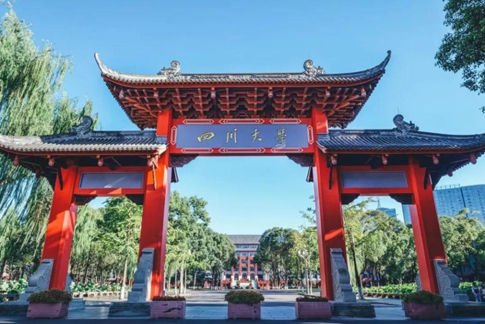

学院通知 · 科研创新
四川大学网络空间安全学院诚邀全球英才申报2026年度优秀青年科学基金项目（海外）
发布时间：2026-02-15
一、 2026 年度优秀青年科学基金项目（海外）项目简介 （一）项目定位 国家自然科学基金优秀青年科学基金项目（海外），旨在吸引和鼓励在自然科学、工程技术等方面已取得较好成绩的海外优秀青年学者（含非华裔外籍人才）回国（来华）工作，自主选择研究方向开展创新性研究，促进青年科学技术人才的快速成长，培养一批有望进入世界科技前沿的优秀学术骨干，为科技强国建设贡献力量。 （二）申报条件及限项要求 1. 遵守中华人民共和国法律法规，具有良好的学术道德，自觉践行新时代科学家精神； 2. 出生日期在 1986 年 1 月 1 日（含）以后； 3. 具有博士学位； 4. 研究方向主要为自然科学、工程技术等； 5. 在取得博士学位后至 2026 年 4 月 15 日前，一般应在海外高校、科研机构、企业研发机构获得正式教学或者科研职位，且具有连续 36 个月以上工作经历；在海外取得博士学位且业绩特别突出的，可适当放宽工作年限要求（不适用于通过中外联合培养方式取得海外博士学位的情况）； 在海外工作期间，同时拥有境内带薪酬职位的申请人，其境内带薪酬职位的工作年限不计入海外工作年限； 6. 取得同行专家认可的科研或技术等成果，且具有成为该领域学术带头人或杰出人才的发展潜力； 7. 申请人尚未全职回国（来华）工作，或者 2025 年 1 月 1 日以后回国（来华）工作。获资助通知后须辞去海外工作并全职回国（来华）工作不少于 3 年。 最终以《 2026 年国家自然科学基金优秀青年科学基金项目（海外）申报指南》为准。 同层次国家科技人才计划只能承担一项，不能逆层次申请。 二、申报说明 请有意向依托我院申报该项目的青年学者，将简历发送至联系邮箱，邮件请注明“申报海外优青项目 + 姓名 + 研究方向”。我院将安排专人及时与意向人选沟通联系，跟进后续申报事宜。 三、支持政策 （一）优厚的薪酬待遇 1. 学校提供具有竞争力的薪酬待遇，上不封顶，首聘期额外享受岗位专项补贴； 2. 享受校内高水平科研奖励； 3. 认定四川省相关人才项目，享受一次性 50 万元资助。 （二）优质的平台资源 (1) 教育事业编制、特聘正高岗位、绿色通道授予博导资格； (2) 组建高水平学术团队，配备专职博士后工作助手和博士生招收指标； (3) 提供良好的科研平台、办公用房等。 （三）充足的科研经费 科研启动经费 300-600 万（含国家支持）。 （四）专业的申报指导 采取“一对一”学术导师指导，服务团队全程跟进。 （五）精细的配套服务 (1) 提供优厚的住房待遇、安家补贴及校内人才公寓租住； (2) 入选后认定为成都市 B 类人才，购房不受户籍、社保缴纳时间以及区域限制，其中购买商品房可提前预留意向购买项目房源，购买人才公寓可享受成都市 15% 政策面积优惠； (3) 子女可入读四川大学幼儿园及附属小学，享受优质基础教育资源； (4) 每年享受华西医院专家体检； (5) 可申领四川省特约医疗证，享受便捷的就诊通道、良好的医疗环境及综合费用支持等； (6) 享受四川大学华西医院、华西口腔医院、华西第二医院（妇产儿童医院）以及华西第四医院顶尖医疗服务保障； (7) 可办理天府英才 A 卡，享受政务、金融、科研、安居、医疗、交通、参观等 7 方面、 16 项专属尊享服务。 四、学校及学院介绍 四川大学拥有着悠久的办学历史与优良的教育传统，是教育部直属的高水平研究型综合大学、 " 世界一流大学 " 建设 A 类高校。经过 130 年的不懈努力，四川大学已经发展成为一所“综合性、研究型、国际化”的顶尖学府。覆盖文、理、工、医、经、管、法、史、哲、农、教、艺、交叉 13 个门类。设有 37 个学科型学院（系）及海外教育学院；现有博士一级学科 53 个、硕士一级学科 2 个，博士交叉学科 4 个，博士专业学位 19 个、硕士专业学位 19 个，博士后流动站 48 个。拥有全国首个生物治疗转化医学国家重大科技基础设施——转化医学国家重大科技基础设施（四川），国家重点实验室、国家工程技术研究中心、国家临床医学研究中心、国家工程实验室等其他国家级科研平台 19 个，国家布局的新研究平台 4 个，以及国家级社科类研究平台 4 个。 四川大学坚持人才是第一资源，深入实施人才强校战略，不断加大高端人才引育，通过实施“双百人才工程”“科技领军人才培育项目”，举办全球青年学者论坛等，汇聚天下英才。四川大学以识才的慧眼、爱才的诚意、用才的胆识、容才的雅量、聚才的良方，诚邀您的加盟！我们将为您搭建优质的学术平台，营造有利的科研环境，提供完善的服务保障，助您施展才华、成就学术大师梦想！ 四川大学自上世纪 90 年代中期即开展网络与信息安全专业和方向的人才培养与科学研究工作， 2016 年成立四川大学网络空间安全学院，获首批网络空间安全一级学科博士点。 2019 年获批网络空间安全博士后科研流动站， 2020 年网络空间安全专业获批国家一流本科专业建设点， 2025 年 1 月入选国家级人才培养基地， 2025 年获全国首个信息与计算科学（网络空间安全）“强基计划”。学院建有四川省网络靶场工程研究中心、国家智能社会治理实验特色基地（教育）和数据安全防护与智能治理教育部重点实验室 3 个省部级科研平台。近年来，承担国家重点研发计划、国家科技攻关项目、国家自然科学基金以及国家相关部委等项目 200 余项，到校科研经费超 2 亿元；获省部级科技进步奖一等奖 2 项，中国标准创新贡献奖二等奖 1 项，其他省部级二等奖 2 项、三等奖 1 项；牵头或参与制定国家标准 10 余项；获国家授权发明专利 100 余项。 五、联系我们 联系人：刘老师 电话： +86-028-85998668 邮箱： ccsrs@scu.edu.cn 学院主页： http://ccs.scu.edu.cn
